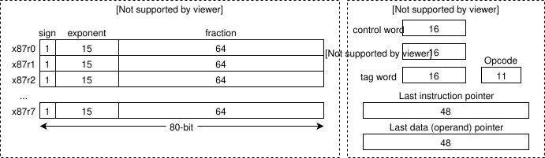
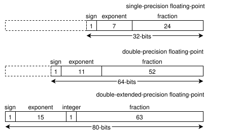
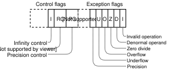

x87 FPU
FPU
The floating-point-unit is a separate module located inside the main CPU that is designed to work with floating-point numbers. The unit has it's own program counter, that's why it can perform computations in parralel to the main CPU unit.
The processing unit is designed to perfrom operations such as addition, subtraction, multiplication, division, square root and many more. Some FPUs are capable of doing advanced computations such as trigonometric functions or transcedental functions.
Register set
x87 is composed out of eight data registers (r0-7 or x87r0-7) and other special-use registers. (status word, control word, tag word, program counter, last data (operand) pointer and opcode register).

Data registers
x87 provides 80-bit single-precision, double-precision and extended precision. The user can chose between each mode as needed. For example, the extented precision model requiers more computation time, but gives higher quality results. The single precision model requiers less computation time, however it has limited quality.
When a value is loaded into the register, it is automatically converted into the floating-point format (only if it isn't already in that format).
Data types
Types in which data registers can operate in consists of, least-significant sign bit, an exponent which in single and double precision format also contains an integer part, and a fraction part which is usually the biggest. The registers are 80-bits total in side, however the single-precision model only covers up first 32-bits, and the other bits are untouched. Same with the double-precision model.
The targeted precision is selected through precision-control (PC) bits inside the control word (bits 8 and 9).

Data register stack
The FPU treat eight data registers as a register stack (ST0 - ST7). The register that is on the top of the stack is indicated inside the TOP 3-bit field status word. The register stack grows downwards. Load operations decrement the stack by one, load values into the new top-stack register. Store operations store the value from the current TOP register in memory and then increment TOP by one. The FPU load operation is equivalent to x86 push, and store operation to x86 pop.
Control word
Control word is a bit field that contains flags such as precision mode, rounding method, exception mask bits and so on. The contents of the reghister can be loaded with the FLDCW instruction and stored in memory with the FSTCW instruction.
When the FPU is initialized with the instruction FINIT, then the control word is set to 0x37F by default. In this mode the floating-point exceptions are masked, the rounding is set to nearest and the precision to 64-bits (double-precision).

Rounding control
The rounding control (RC) field (bits 10 & 11) controls how the results of arithmetic operations are rounded.
| Mode | Value | Description |
|---|---|---|
| Round to nearest | 0b00 | Rounded value is the closest to infinitely precise result. If the two values are equally close, then the even result is picked up (i.e. one with the least-significant bit set to zero). This option is set by default. |
| Round down towards -inf | 0b01 | The result is the one closest downwards -inf. |
| Round up towards inf | 0b10 | Rounded result is the one closest towards inf. |
| Round toward zero | 0b11 | Rounded result is the one closest to absolute zero. |
Precision control
The precision control (PC) field (bits 8 & 9) determines the precision model.
| Precision Model | Value |
|---|---|
| Single-precision | 0b00 |
| Unused | 0b01 |
| Double-precision | 0b10 |
| Double-extented-precision | 0b11 |
Exception flags
Exception flags specify the fault when performing arithmetic operations on floating-point values.
Status word
The status register indicates the current state of the FPU. The FPU sets the flags in this register to show the results of operations.

Condition code
The four condition flags (C0 through C3) indicate the results of floating-point comparison and arithmetic operations.
Top of stack (top) pointer
A pointer to the data register that is currently at the top of the x87 register stack. Holds value from 0 to 7
Exception flags
Exception flags specifies that one or more floating-point exceptions have been detected since the bits were last cleared.
Tag word
Each register has a separate 2-bit flag tag word register called x87TagWord that indicates three states. If the value is valid, (0b00) zero, special (inf, NaN, unsupported) or empty (0b11). These eight two-bit registers together make a 16-bit tag word. Registers are called x87_TW_X where X is a 0-7 value.
When the FPU is initialized using FINIT, the tag word is set to 0xFFFF, which sets the status for every register to empty respectively.